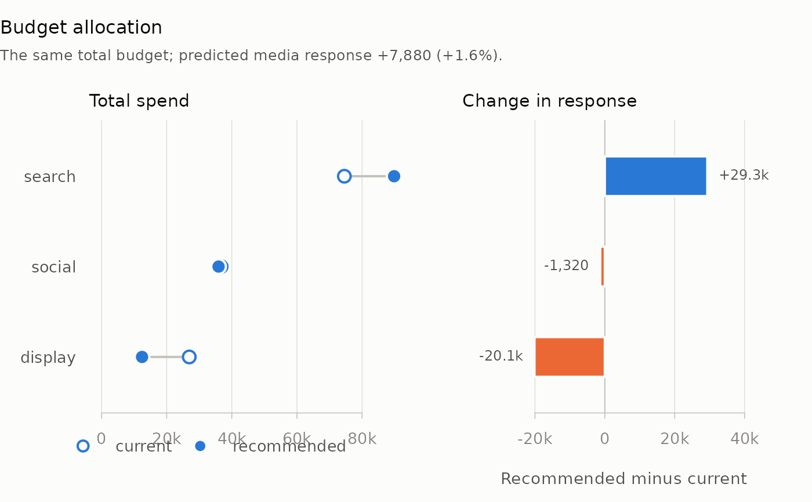

Splits a total budget across the channels of a plan so that the media response the model predicts is as large as possible. Each channel's whole series is rescaled, so its flighting is kept, and each channel's total spend stays within its bounds.
Usage
allocate_budget(
plan,
spec,
coefficients,
total = NULL,
lower = NULL,
upper = NULL,
by = NULL,
steps = 200L,
extend = 0L
)Arguments
- plan
A data frame with one row per period and a numeric column of spend for each channel in
spec. Spend must be complete, finite and non-negative. Other columns may be present.- spec
A list with one entry per channel, named after the channel's column in
plan. Each entry is a list with elementsadstockandsaturation, in the formmedia_transform()takes them, and optionallyorder. An element left out takesmedia_transform()'s default, so an entry withoutadstockgets geometric carryover atdecay = 0.5; writeadstock = NULLfor none.- coefficients
A numeric vector of the channels' fitted coefficients, named by channel, such as
coef(fit). Every channel inspecneeds one; other names, such as the intercept and the controls, are ignored.- total
Total spend to allocate across the channels in
spec. Defaults to their total inplan, which asks how the current budget would best be split. It must lie between the sum oflowerand the sum ofupper.- lower, upper
Bounds on each channel's total spend: a numeric vector named by channel, or one number for every channel. A channel not named gets
0andInf.- by
Optional grouping, so that carryover runs within each group, such as a geography, and never from one into the next: column names of
plan, or a vector or data frame of vectors with one element or row per row ofplan, as formedia_transform().- steps
Number of equal increments that the budget above the lower bounds is divided into, at most 10,000. More steps give a finer answer and take longer: the number of transforms grows with
stepstimes the number of channels, and the search withstepssquared.- extend
Number of zero-spend periods appended to the end of the series (to each group, when
byis supplied) before response is summed, as formarginal_roi(). The default0counts response only inside the plan's periods.
Value
An mm_allocation object, a list with:
allocationA data frame with one row per channel in
spec, in its order, and columnschannel,current_spend,recommended_spend,current_response,recommended_responseandmroi. Response is assimulate_plan()defines it.mroiis the marginal return at the recommended spend, computed asmarginal_roi()does: the extra response from a 1% increase in that spend, per unit of the increase. It isNAwhere the recommended spend is zero.planThe recommended plan:
planwith each channel's column rescaled to its recommended total.total,step,stepsThe budget allocated, the size of one increment and the number of increments.
It has a print() method, as.data.frame() and tidy() methods that
return allocation, and a plot() method.
Details
Each channel's response is computed at its lower bound and at every
multiple of the step above it, up to its upper bound, by rescaling the
channel's whole series. Dynamic programming then picks the combination of
levels, one per channel, that spends total exactly with the largest
total response.
The result is the best allocation on that grid for curves of any shape,
S-shaped Hill curves (shape > 1) included. Such a curve returns little
on its first increments, so a search that hands out the budget one
increment at a time, each to the channel whose next increment returns
most, can leave the channel unfunded however well it pays further up.
Comparing every level of every channel avoids that. Nothing between grid
points is searched, so the answer is only as fine as the step; rerun with
a larger steps to check that it has settled. Where every curve is
concave and no bound binds, the channels' mroi values come out close to
equal; a channel held at a bound can have a higher or a lower one.
The whole of total is spent, since the question is how to split a given
budget. An mroi below 1 says the last part of a channel's budget returns
less than it costs, and a smaller total may then be better.
The answer is only as good as the fitted curves. A curve is identified
only over the spend levels the data contains, so a recommendation that
takes a channel far beyond the spend it has run at is extrapolation; test
a large move before making it (see marginal_roi()).
A channel with no spend in plan has no flighting to rescale, so it stays
at zero, with a message, and a lower bound above zero for it is an error.
To consider it, give it small weights in the periods it should run, for
example plan$video <- 1e-6 for an even spread.
Examples
data(mm_weekly)
north <- mm_weekly[mm_weekly$geo == "north", ]
truth <- attr(mm_weekly, "truth")
channels <- c("search", "social", "display")
spec <- lapply(stats::setNames(channels, channels), function(ch) list(
adstock = list(decay = truth$decay[[ch]]),
saturation = list(half_max = truth$half_max[[ch]],
shape = truth$shape[[ch]])
))
# The same budget, split to maximise the predicted response
best <- allocate_budget(north, spec, truth$beta, steps = 100)
best
#>
#> ── Budget allocation
#> A total of 138,213, in 100 increments of 1,382.13.
#> Predicted media response: 479,899 now, 487,779 recommended.
#> channel current_spend recommended_spend current_response recommended_response
#> search 74560 89838 325735 355070
#> social 36716 35935 105770 104453
#> display 26937 12439 48394 28256
#> mroi
#> 1.729
#> 1.694
#> 1.743
#> The recommended plan is in $plan.
# Keep every channel within 25% of its current spend
now <- colSums(north[channels])
allocate_budget(north, spec, truth$beta, lower = 0.75 * now,
upper = 1.25 * now, steps = 100)
#>
#> ── Budget allocation
#> A total of 138,213, in 100 increments of 345.532.
#> Predicted media response: 479,899 now, 485,880 recommended.
#> channel current_spend recommended_spend current_response recommended_response
#> search 74560 85636 325735 347567
#> social 36716 32374 105770 98148
#> display 26937 20203 48394 40164
#> mroi
#> 1.823
#> 1.837
#> 1.344
#> The recommended plan is in $plan.
plot(best)
